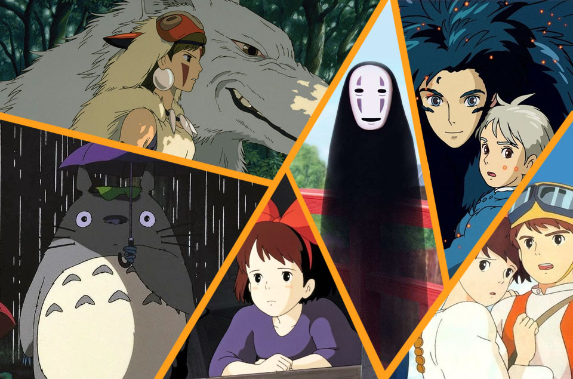

Fue fundado el 15 de junio de 1985 por los directores Hayao Miyazaki e Isao Takahata y el productor Toshio Suzuki, después del éxito de la película de anime de Topcraft Nausicaä del Valle del Viento (1984). Studio Ghibli también ha colaborado con estudios de videojuegos en el desarrollo visual de varios videojuegos.
El nombre Ghibli deriva de la palabra italiana «ghibli», basada en el nombre del viento cálido del desierto que sopla en Libia. También hace referencia a un avión italiano, el Caproni Ca.309 Ghibli. Aunque la palabra en italiano se translitera ギブリ (Giburi), el nombre en japonés del estudio es ジブリ (Jiburi).
Studio ghibli
es un estudio japonés de animación, considerado por la crítica especializada y muchos cinéfilos como uno de los mejores estudios de animación del mundo en la actualidad.1
El estudio es conocido por sus largometrajes animados y también ha producido varios cortometrajes, comerciales de televisión y una película para televisión.
Director
Hayao Miyazaki es un director de cine de animación, animador, ilustrador, empresario, mangaka y productor de anime japonés. Junto con Isao Takahata, fundó Studio Ghibli, un estudio de películas y animación. Entre sus filmes de animación más populares se hallan títulos como El viaje de Chihiro (que rebasó los ingresos en taquillas de Japón y superó el éxito obtenido por Titanic, también obtuvo el premio como Película del Año (2001) en los Premios de la Academia de Japón, y fue la primera película de anime en ganar un Premio Óscar), La princesa Mononoke, Mi vecino Totoro, Howl no Ugoku Shiro y Gake no ue no Ponyo. Sus películas hablan de la relación de la humanidad con la naturaleza, la tecnología y la dificultad de mantener una ética pacifista.
Caracterizticas
Studio Ghibli se caracteriza por sus hermosas e imaginativas películas animadas, así como por su estilo visual único, sobre todo que tenemos en mente personajes de mujeres que son heroínas, el pasto y cielo hermoso, así como sus personajes imaginarios. El estudio es conocido por crear fondos exuberantes y detallados. Sus películas a menudo exploran temas de amistad, familia y el mundo natural, y tienen un atractivo universal que trasciende las fronteras culturales y de edad.
Peliculas
Nausicaä-
castle in the sky-
grave of fireflies-
my neighbor totoro-
kiki´s delivery service-
Recuerdos del ayer-
Porco Rosso-
ocean waves-
Pompoko-
whisper of the heart-
princess Mononoke-
my neighbors Yamada-
El viaje de Chihiro-
the cat returns-
howl´s moving castle-
tales of earthsea-
Ponyo-
Arrietty-
from up on poppy hills-
the wind rises-
tale of princess Kaguya-
When marnie was here-
Earwig the witch
Curiosidades
1. El agua de “Ponyo en el acantilado” fue dibujada a mano por Miyazaki
2.La primera película de Studio Ghibli fue “El Castillo en el cielo”
3.Miyazaki se inspiro el la hija de unos amigos para crear a Chihiro
4.La primera película de Studio Ghibli realizada por ordenador fue “Mis vecinos Los Yamada”
5.“La tumba de las luciérnagas” está basada en una historia real
Personajes

01. Nausicaä, de Nausicaä del Valle del Viento
02. Sheeta, de El Castillo en el Cielo
03. Nicky, de Nicky, la Aprendiz de Bruja
04. Shizuku, de Susurros del Corazón
05. Satsuki, de Mi Vecino Totoro
06. San, de La Princesa Mononoke
07. Haru, de Haru en el Reino de los Gatos
08. Sophie, de El Castillo Ambulante